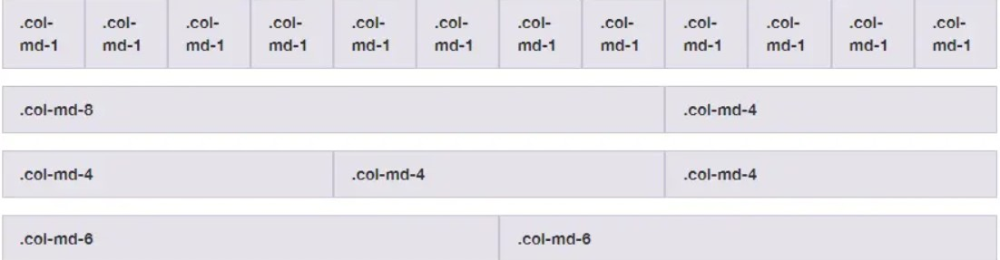

[1]what are the advantages of Bootstrap?
Answer:[2]what is the Bootstrap Container,and how does it work?
Answer:-
.container, which sets a max-width at each responsive breakpoint
-
.container-fluid, which is width: 100% at all breakpoints
-
.container-{breakpoint}, which is width: 100% until the specified breakpoint
Bootstrap, container is used to set the content's margins dealing with the responsive behaviors of your layout. It contains the row elements and the row elements are the container of columns (known as grid system).
Containers are the most basic layout element in Bootstrap and are required when using default grid system. Containers are used to contain, pad, and (sometimes) center the content within them. Although containers can be nested, most layouts do not require a nested container.
Bootstrap comes with three different containers:
» It requires use with the default grid system.
» To establish width for the layout to give web content.
» To provide responsive fixed behavior of any web project.
» To sets the content margin dealing with the responsive behavior of your layout.
[3]what are the default Bootstrap text settings?
Answer:Bootstrap 4 uses a default font-size of 16px, and its line-height is 1.5. The default font-family is "Helvetica Neue", Helvetica, Arial, sans-serif. In addition, all
elements have margin-top: 0 and margin-bottom: 1rem (16px by default).
- Bootstrap 4 styles HTML headings (<h1> to <h6>) with a bolder font-weight and an increased font-size:
- Display Headings: Display headings are used to stand out more than normal headings (larger font-size and lighter font-weight), and there are four classes to choose from: .display-1, .display-2, .display-3, .display-4
- <small> In Bootstrap 4 the HTML <small> element is used to create a lighter, secondary text in any heading:
- <mark> Bootstrap 4 will style the HTML <small> element with a yellow background color and some padding:
- <abbr> Bootstrap 4 will style the HTML <abbr> element with a dotted border bottom:
- <blockquote> Add the .blockquote class to a <blockquote> when quoting blocks of content from another source:
- <dl> Bootstrap 4 will style the HTML <dl> element in the following way:
- <code> Bootstrap 4 will style the HTML <code> element in the following way:
- <kbd> Bootstrap 4 will style the HTML <kbd> element in the following way:
- <pre> Bootstrap 4 will style the HTML <pre> element in the following way:
[4]What do you know about the Bootstrap Grid System?
Answer:- Container Bootstrap requires a containing element to wrap site contents and house our grid system. Without a container, the grid won't work properly.
- Row Rows create horizontal groups of columns. Therefore, if you want to split your layout horizontally, use .row.
- Columns Bootstrap's grid system allows up to 12 columns across the page. 
Grid system
Bootstrap grid is a powerful system for building mobile-first layouts. It's very extensive tool with a great number of options.
Bootstrap’s grid system uses a series of containers, rows, and columns to arrange and align content. It’s built with flexbox and is fully responsive.
[5]What is the difference between Bootstrap 4 and Bootstrap 5 ?
Answer:| BASIS OF | BOOTSTRAP 4 | BOOTSTRAP 5 |
|---|---|---|
| Grid System | It has 5 tier (xs, sm, md, lg, xl). | It has 6 tier (xs, sm, md, lg, xl, xxl). |
| Color | It has limited colors. | Extra colors added with the looks, A card improved color palette. there are various shades available to choose. |
| Jquery | It has jquery and all related plugins. | Jquery is removed and switched to vanilla JS with some working plugins |
| Internet Explorer | Bootstrap 4 supports both IE 10 and 11. | Bootstrap 5 doesn’t support IE 10 and 11. |
| Form elements | Radio buttons, checkboxes have different look in different OS and browsers. The form uses whatever default browsers provide. | The look of form elements will not change, on different OS or browser. The forms can be customized and form controls can be added, they would not depend on browser. |
| Utilities API | We cannot modify utilities in bootstrap 4 | Bootstrap 5 gave freedom to modify and also create our own utility |
| Gutter | We use .glutter with fontsize in px | We use .g* with fontsize in rem |
| Vertical Classes | Columns can be positioned relative | Columns cannot be positioned relative |
| Bootstrap Icons | Bootstrap 4 doesn’t have its own SVG icons, we have to use font-awesome for icons. | Bootstrap 5 have its own SVG icons |
| Jumbotron | It supports. | It doesn’t support jumbotron. |
| Card deck | The card deck is used to create an isset of cards with equal width and height. | Card deck class in removed in bootstrap |
| Navbar | We have inline-block property and we will get white dropdown as default for dropdown-menu-dark class. | Inline-block property is removed and we will get black dropdown as default for dropdown-menu-dark class. |
| Static Site Generator | Bootstrap 4 uses Jekyll software. | Bootstrap 5 uses Hugo software as it is fast static site generator. |
| flexbox grid | this makes easier to implement vertical designs, and the columns and rows can easily be implemented. the classes justify-center-content can directly be used to align according to the requirement. | advanced grid system is made available , also columns don’t have relative positions. |
| RTL Support | It does not enable RTL(Right to Left) switching. | It enables RTL(Right to Left) switching. |
| Offcanvas Component | It does not support Offcanvas Component. | It supports Offcanvas Component(that is it is available now). |
[6]What is a Button Group, and what is the class for a basic Button Group?
Answer:Buttons have a default border-radius on the first and last buttons of the group.
Adding Styles on Buttons: Bootstrap allows you to add styles to your buttons using the following classes:
- .btn-default
- .btn-primary
- .btn-success
- .btn-info
- .btn-warn
- .btn-dang
- .btn-link
[7]How can you use Bootstrap to make thumbnails?
Answer:Thumbnail Image: A thumbnail is a small image that represents a larger image. Bootstrap has an easy way to do this with thumbnails. Bootstrap’s .thumbnail class is used to show linked images in grids (grid system), a thumbnail is created using class .thumbnail within the element <a>. The class .col-sm-* and .col-md-* (where * represent number ), it is used to create grids of the images.
- Step 1: Include Bootstrap and jQuery CDN into the tag before all other stylesheets to load our CSS.
- Step 2: Add <div> tag in the HTML body with class row. In that <div> create four div sections to create four images.
- Step 3: Add “col-sm-6” and “col-md-3” to four div sections which creates webpage responsive.
- Step 4: Add <a> tag with class value thumbnail to define the link of the image in the next line.
Step by step guide for the implementation:
[8]In Bootstrap 4, what is flexbox?
Answer:It’s important to understand that Bootstrap 4’s grid system is built with Flexbox. What sets Bootstrap apart from using Flexbox alone is the process of writing code. With Bootstrap, you can create a grid using only HTML. With Flexbox, you must use HTML and CSS. Let’s take a closer look at each process below.
Bootstrap has a twelve-column system, which means there can be up to twelve grid columns on a single horizontal block. You can have more than twelve, they’ll just start to wrap rather than show up on a single axis, regardless of the viewport.
[9]How can one create an alert in Bootstrap?
Answer:- Step 1: Include Bootstrap and jQuery CDN into the <head> tag before all other stylesheets to load our CSS.
- Step 2: Add the .alert and the warning alert contextual classes (e.g., .alert-warning).
- Sample Code: <div class="alert alert-warning" role="alert"> A simple warning alert—check it out! </div>
-
Bootstrap provides an easy way to create predefined alert messages:
Success! Indicates a successful or positive action.Info! Indicates a neutral informative change or action.Warning! Indicates a warning that might need attention.Danger! Indicates a dangerous or potentially negative action.× Danger! This alert box could indicate a dangerous or potentially negative action.
[10]What is a bootstrap card and how would you create one?
Answer:Card:
About
- Sample code: <div class="card"> <img class="card-img-top" src="..." alt="Card image cap"> <div class="card-block"> <h4 class="card-title">Card title <p class="card-text">Some quick example text to build on the card title and make up the bulk of the card's content. <a href="#" class="btn btn-primary">Go somewhere </div> </div>
Contents:

Bootstrap
Bootstrap is the most popular HTML, CSS, and JS framework for developing responsive, mobile first projects on the web.
know more